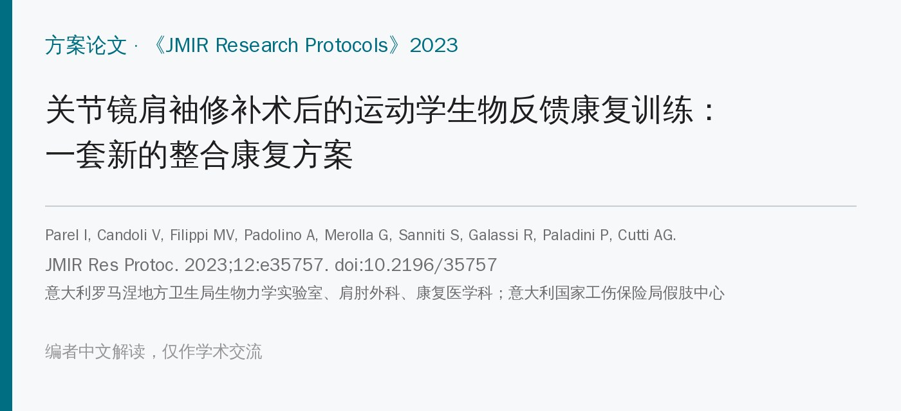
🔖原文信息（编者中文重排）
📚 文献信息
▪ Parel I, Candoli V, Filippi MV, Padolino A, Merolla G, Sanniti S, Galassi R, Paladini P, Cutti AG. Shoulder Rehabilitation Exercises With Kinematic Biofeedback After Arthroscopic Rotator Cuff Repair: Protocol for a New Integrated Rehabilitation Program. JMIR Research Protocols. 2023;12:e35757. doi:10.2196/35757
▪ 作者单位：意大利罗马涅地方卫生局（生物力学实验室、临床工程科、康复医学科、肩肘外科）、意大利国家工伤保险局（INAIL）假肢中心运动分析实验室
▪ 文章类型：方案论文——只介绍训练方案怎么设计、怎么做，没有患者数据
肩袖撕裂患者常伴肩胛骨运动障碍，以上回旋 / 下回旋和前倾 / 后倾最常受影响。肩袖修补术后康复要把肩胛骨的控制练回来，但“肩胛骨动得对不对、差多少”很难用肉眼判断，治疗师缺少客观工具。
生物反馈就是把身体的状态（肌电、动作角度等）实时显示给患者看，帮助他们自我纠正。已有初步证据表明，生物反馈能改善冻结肩、肩峰下撞击综合征患者的肩胛控制，但基于定量运动学数据的研究很少，而且都是单次训练的即时效果；肩袖修补术后用运动学生物反馈康复，此前没有研究。
• 团队：3 名肩外科医生（每年合计约 687 例关节镜肩袖手术）、2 名康复科医生、2 名物理治疗师、3 名生物医学和临床工程师，都有 15 年以上经验
• 设备：ISEO 运动分析系统，4 个无线惯性传感器贴在胸廓、肩胛骨、肱骨和前臂，实时算出肱骨和肩胛骨相对胸廓的角度；已和光学动捕系统做过验证，也测过测试者内、测试者间信度，并有按年龄分层的无症状人群参考带
• 选练习：以医院原有的常规康复方案为基础，挑出可以接生物反馈的练习，遵守 8 条约束：传感器不影响动作（如不做仰卧位）、治疗师不碰传感器、保留球棒带等器材、反馈画面清楚、患者能舒服地看屏幕、每个练习都由治疗师手法或口头指导、肱骨只在一个主平面上动、覆盖从早期到后期
• 试练：2 名治疗师和 2 名工程师练了 4 次、每次 3 小时，治疗师轮流当患者和治疗师；最后全队开会达成共识
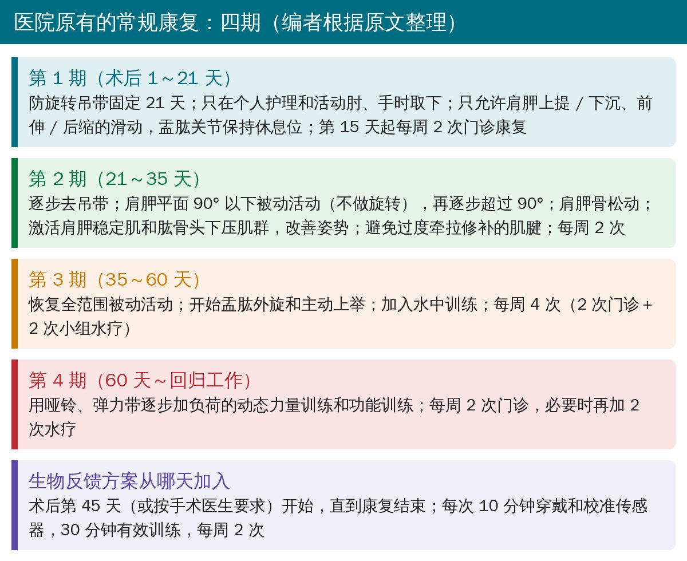
🔖医院原有的常规康复四期（编者根据原文整理）
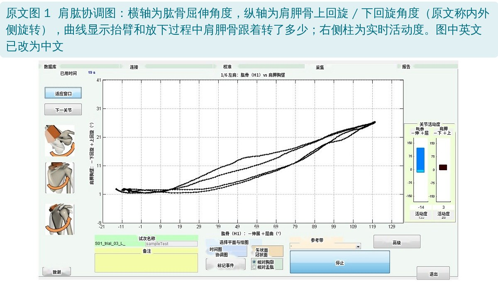
🔖原文图 1：肩肱协调图（图中英文已改为中文）
• 肩肱协调图：横轴是肱骨上举角度，纵轴是肩胛骨的某个转动角度（每个方向一张图）。用于多节段协调的练习，比如抬臂时肩胛骨该转多少
• 可以叠加无症状人群的参考带当目标，也可以在治疗师帮助下做一次“标准动作”，作为之后练习的个人目标
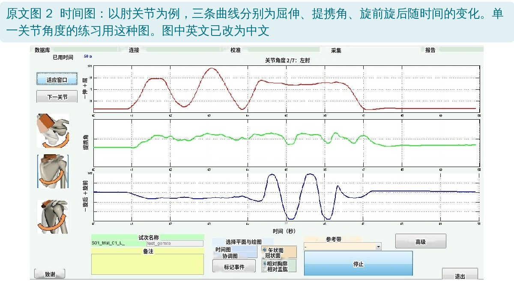
🔖原文图 2：时间图（图中英文已改为中文）
• 时间图：角度随时间变化，并实时显示活动度。用于单一角度的练习：生理性的动作要把活动度做大，代偿动作要把活动度压小（比如外旋时肩胛骨的曲线要尽量平）
• 用错图会误导：协调动作用时间图会丢掉信息；单关节动作用协调图又会把画面搞复杂
• 第一次训练时要详细讲解图的含义，之后每个练习开始前简单复习；患者不必懂生物力学，能把自己的动作和曲线对应起来即可
| 组别 | 练习 | 器材 | 看什么反馈 |
|---|---|---|---|
| 第 1 组 矢状面 | A 瑞士球辅助屈伸 B 持棒辅助屈伸 C 拉弹力带屈伸 D 开链屈伸 | 瑞士球 / 棒 / 弹力带 / 可加哑铃 | 矢状面协调图看肩胛骨三个方向；时间图看肱骨内外旋 |
| 第 2 组 肩胛平面 | A 瑞士球辅助外展 B 拉弹力带外展 C 开链外展 | 瑞士球 / 弹力带 / 可加哑铃 | 肩胛平面协调图；时间图看肱骨内外旋 |
| 第 3 组 内外旋 | A 体侧内外旋 B 前屈 90° 位内外旋 C 外展 90° 位内外旋 | 软球、毛巾或小枕 / 可加哑铃、弹力带 | 时间图看肩胛骨三个方向（要平）和肱骨内外旋 |
| 第 4 组 肩胛胸壁 | A 扶凳俯卧撑 B 前屈 90°～120° 位前伸后缩 | 无 / 可加哑铃 | 时间图看肩胛骨三个方向 |
原文表 1：ISEO 方案的 12 个练习（中文翻译）
主要目标是抬臂、放下时控制好肩胛骨，次要目标是看抬臂时肱骨有没有伴随外旋；重点练动态肩胛稳定肌、冈下肌、小圆肌和核心。除 D 外都双侧同时做，减少躯干侧倾、旋转带来的假象；C 和 D 的先后可按患者能力调换。
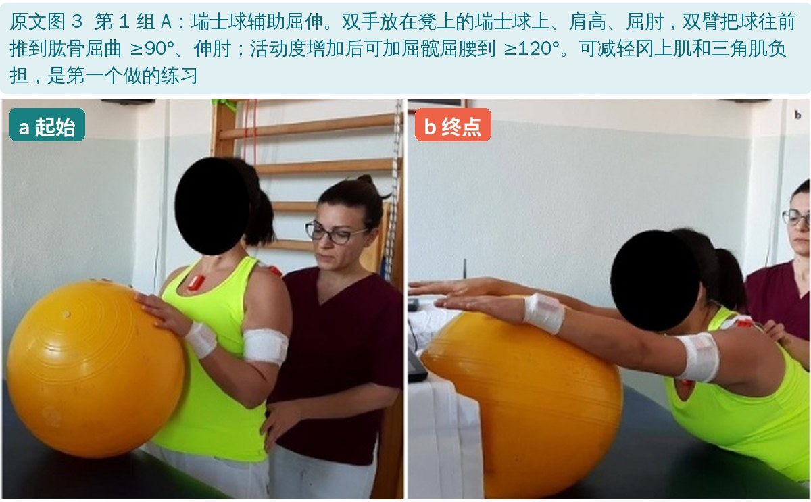
🔖第 1 组 A：瑞士球辅助屈伸（第一个做）
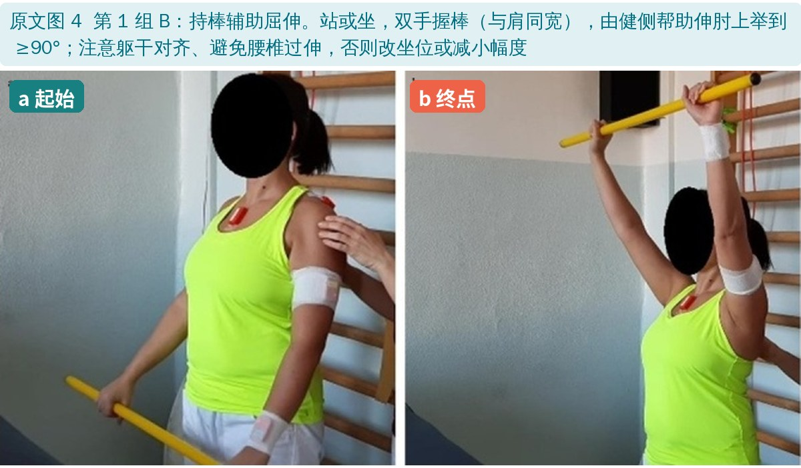
🔖第 1 组 B：持棒辅助屈伸
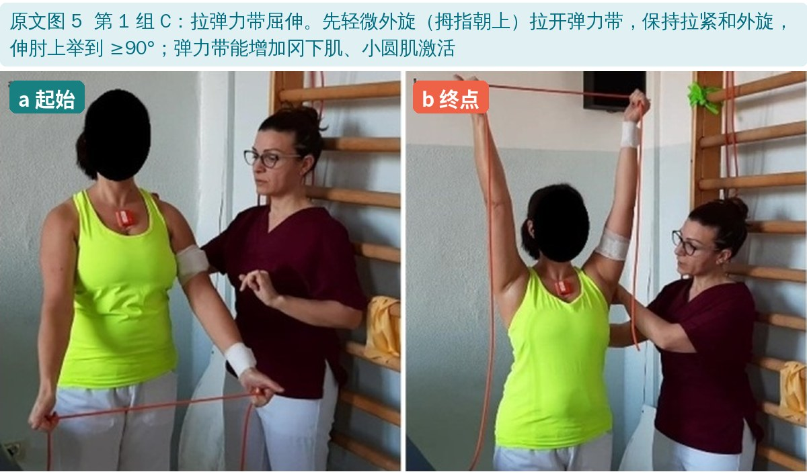
🔖第 1 组 C：拉弹力带屈伸
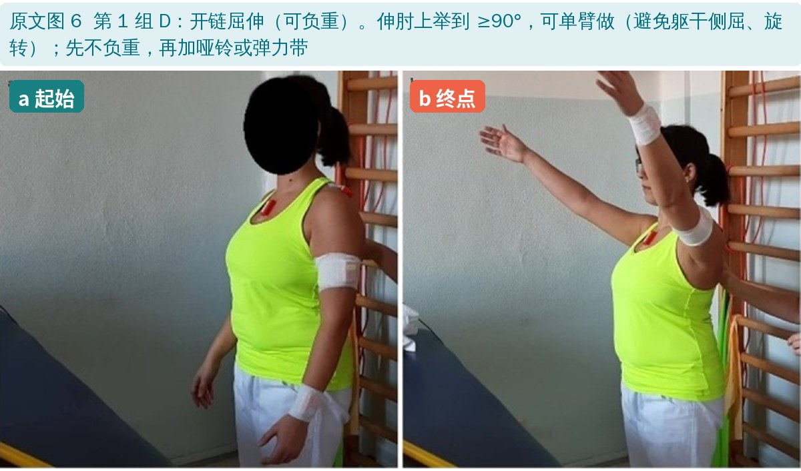
🔖第 1 组 D：开链屈伸
矢状面和肩胛平面上举是够物等功能动作，要尽早、准确地练。上举时前锯肌和下斜方肌高度激活，带动肩胛骨上回旋；下斜方肌维持肩胛骨的瞬时旋转中心，并帮助前锯肌把肩胛骨贴住胸廓。
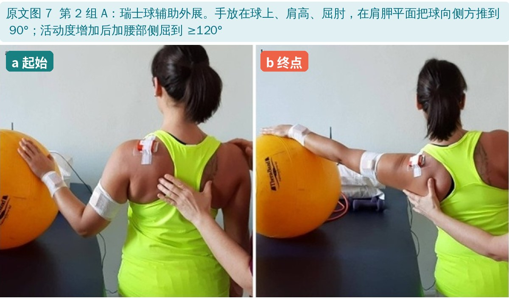
🔖第 2 组 A：瑞士球辅助外展
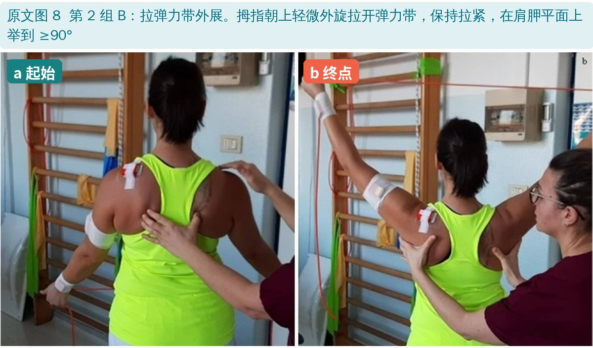
🔖第 2 组 B：拉弹力带外展
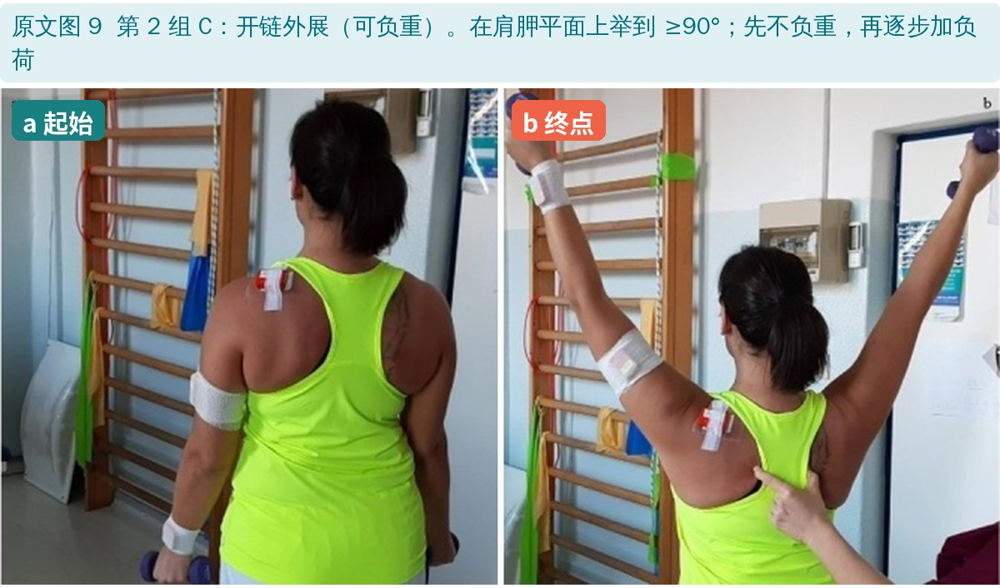
🔖第 2 组 C：开链外展
在不同上举角度下做内外旋，要求肩胛骨的曲线尽量保持平，同时恢复旋转活动度和肩袖力量。都从不负重开始；B、C 先把上臂放在支撑面上，再脱离支撑；站立做对核心要求更高，核心差可背靠墙。
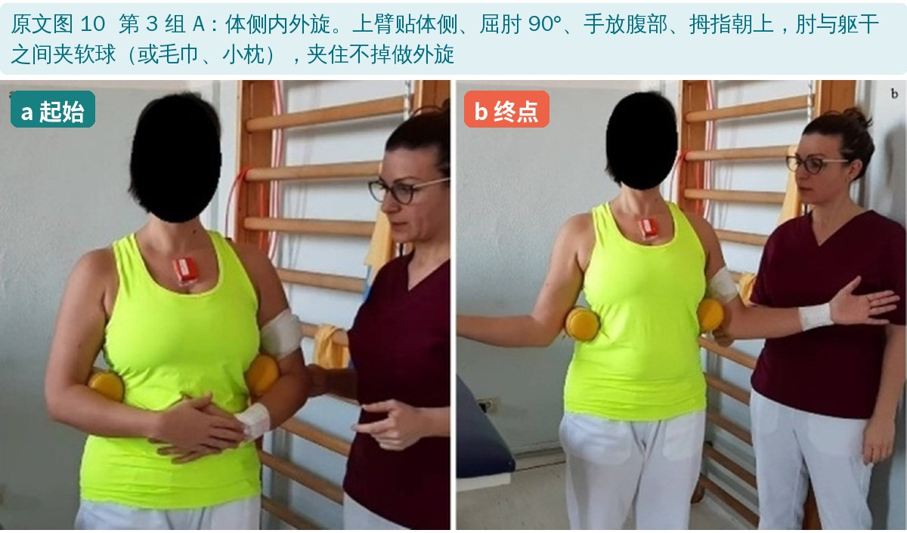
🔖第 3 组 A：体侧内外旋（肘与躯干间夹软球）
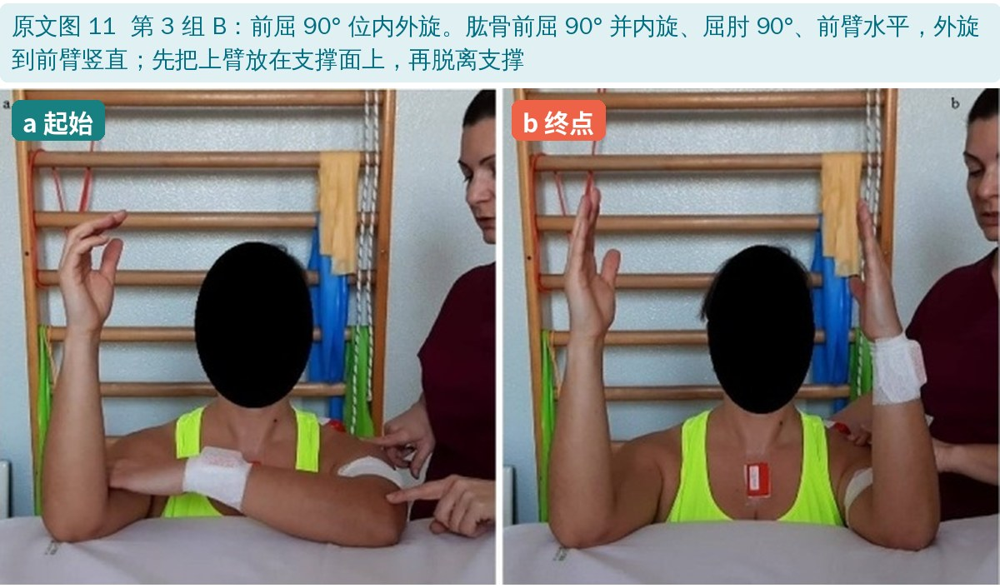
🔖第 3 组 B：前屈 90° 位内外旋
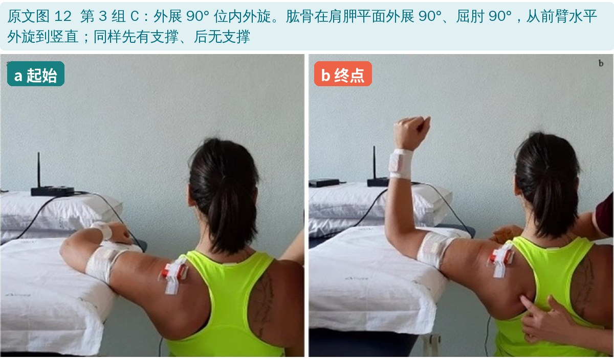
🔖第 3 组 C：外展 90° 位内外旋
肱骨固定在某个上举角度，只动肩胛骨，主要练前锯肌、中下斜方肌和菱形肌。闭链负重练习对前锯肌、冈下肌的激活明显更高，但肩的负荷也更大，从站立扶高处开始，逐步过渡到完全负重。
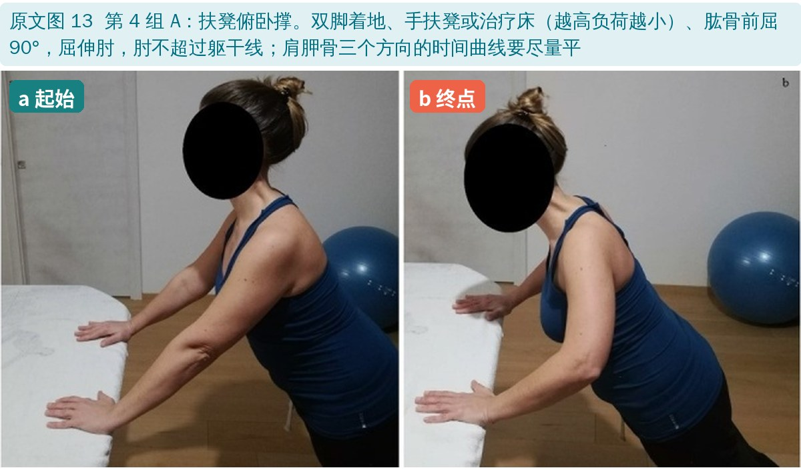
🔖第 4 组 A：扶凳俯卧撑（越高负荷越小）
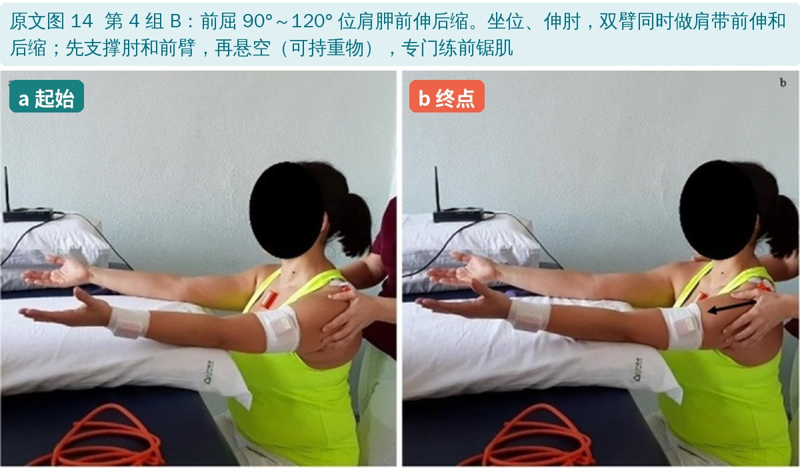
🔖第 4 组 B：前屈 90°～120° 位肩胛前伸后缩（专练前锯肌）
• 先评估：被动和主动活动度、静息和活动时疼痛、主动上举时能否保持良好姿势控制，据此选练习和起点
• 先讲清楚：描述和示范动作，解释屏幕上显示什么、目标是什么
• 达标标准：神经肌肉控制良好，无痛、无代偿，姿势对齐、核心稳定
• 及时干预：动作错误、代偿或疼痛时用手法或口头引导；可减负荷、换起始姿势或退回简单的练习
• 加量规则：能无痛、无代偿地完成 10 次才加量；哑铃每次加 0.5 kg；弹力带按黄 → 橙 → 绿 → 蓝逐级加；用协调图时患者曲线要落在参考带内，用时间图时看活动度该大的大、该小的小
• 剂量：术后第 45 天起，每周 2 次一对一治疗，每次 10 分钟穿戴校准＋30 分钟训练，直到康复结束（回归工作）
• 这只是“菜谱”：方案论文没有患者数据，摘要中的“结果”其实只是计划的频次和时长；效果如何要等随机对照试验
• 设备门槛高：需要惯性传感器系统和软件，每次多花 10 分钟准备，还要处理软硬件报警，国内大多数机构难以直接复制
• 看不到全部：系统没有测胸锁关节和肩锁关节，它们对肩部运动的贡献没有纳入
• 对患者有要求：需要能看懂曲线并和自己的动作对应，熟悉数字设备的患者可能获益更快
• 适用范围：主要针对解剖性肩袖修补术后的患者
• 优点：按国际运动报告模板（CERT）描述，每个练习都写清了起始位、做法、目标位、注意事项和反馈类型；12 个练习本身不用设备也能做
• 第 2 组 A 的目标位写成了“屈曲”：这组是肩胛平面外展，原文目标位却写“肩关节屈曲 90°”
• 第 2 期活动度说法自相矛盾：同一段先说“肩胛平面 90° 以下被动活动”，又说“被动活动可逐步超过 90°”
• “结果”名不副实：摘要和正文的“结果”只有计划的频次和强度，没有任何结果
• 图注用词不一：图 6 写“屈曲 / 上举”，正文写“屈曲 / 伸展”；图 9 写“不负重 / 负重弹力带”
• 小错：“with no pain and any compensate”（应为无代偿）；“plane of moment”（应为 plane of movement）；参考文献 7 的文章号 3810 与 doi 中的 2974 不一致
• 没有传感器也能借鉴：12 个练习按矢状面 → 肩胛平面 → 内外旋 → 肩胛胸壁分组，每组由辅助到抗阻，是一套清楚的肩袖术后肩胛控制训练进阶
• 反馈形式可以简化：镜子、手机录像回放、治疗师手放在肩胛骨上提示，都是低成本的视觉或触觉反馈
• 练什么就看什么：协调类动作看肩胛骨跟没跟上，单关节动作看代偿有没有压住——这条原则不依赖设备
• 加量规则可直接用：10 次无痛无代偿才加量，哑铃 0.5 kg、弹力带一级一级地加
• 具体开始时间仍要服从修补肌腱的愈合时间和手术医生的要求
欢迎关注骨科康复小黄公众号，获取更多物理治疗的专业知识！
📄参考文献：
Parel I, Candoli V, Filippi MV, Padolino A, Merolla G, Sanniti S, Galassi R, Paladini P, Cutti AG. Shoulder Rehabilitation Exercises With Kinematic Biofeedback After Arthroscopic Rotator Cuff Repair: Protocol for a New Integrated Rehabilitation Program. JMIR Res Protoc. 2023;12:e35757. doi:10.2196/35757
原文以 CC BY 4.0 协议开放获取，版权归原作者所有。本文为学术交流用的中文解读：原文图 1～14 引自原文，图 1、2 中英文已改为中文，图 3～14 加了中文标签；常规康复分期卡为编者根据原文整理，表格为中文翻译。如有侵权请联系删除。